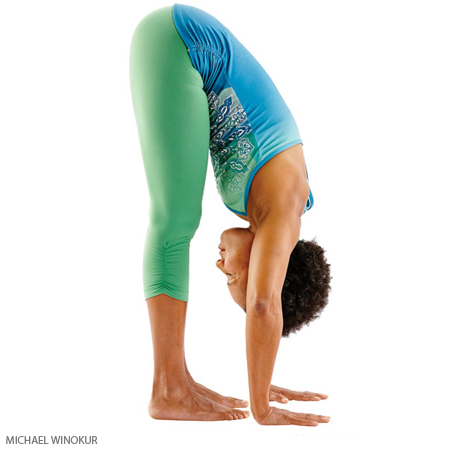

Asthma & high blood pressure: Practice Halasana with the legs supported on props.
Diarrhea,
Menstruation,
Neck injury.
Benefits
Calms the brain.
Stimulates the abdominal organs and the thyroid gland.
Stretches the shoulders and spine.
Helps relieve the symptoms of menopause.
Therapeutic for backache, headache, infertility, insomnia, sinusitis.
Standing Forward Bend

Pose Information
Sanskrit Name : Uttanasana
Pose Level : 1
Contraindications and Cautions
Back injury: Do this pose with bent knees, or perform Ardha Uttanasana (pronounced ARE-dah, ardha= half), with your hands on the wall, legs perpendicular to your torso, and arms parallel to the floor.
Benefits
Calms the brain and helps relieve stress and mild depression
Stimulates the liver and kidneys
Stretches the hamstrings, calves, and hips
Therapeutic for asthma, high blood pressure, infertility, osteoporosis, and sinusitis